Dev links
O Dev links é um agregador de links onde é possível colocar links que redirecionam para qualquer rede social desejada ou qualquer site da internet.
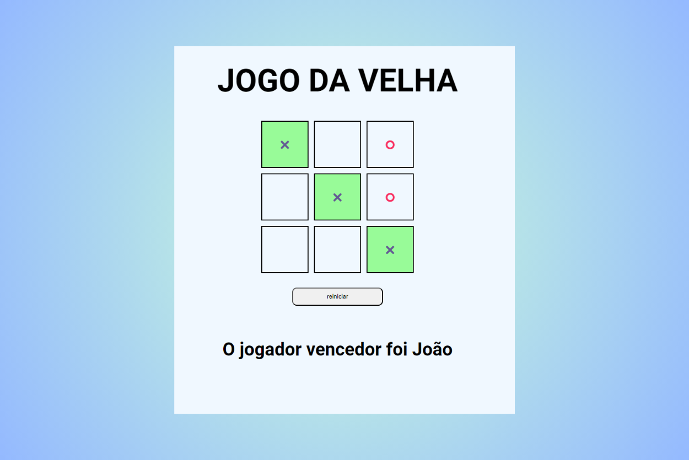
Jogo da Velha
Esse é um jogo da velha que tem a opção de colocar o nome dos jogadores, mostra a vez dos jogadores, informa o ganhador ou se deu empate e é possível reiniciar a qualquer momento.

Landing page
Uma landing page totalmente responsiva desenvolvida no curso OneBitCode.
Player de Música
O Dev links é um agregador de links onde é possível colocar links que redirecionam para qualquer rede social desejada ou qualquer site da internet.

Card de Produto
O Dev links é um agregador de links onde é possível colocar links que redirecionam para qualquer rede social desejada ou qualquer site da internet.
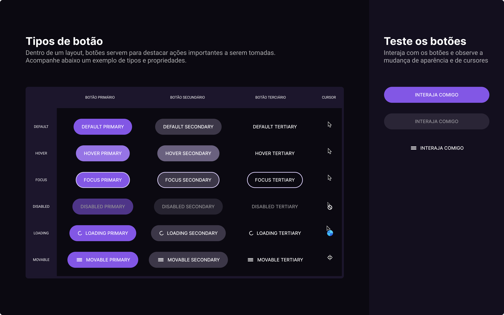
Botões
O Dev links é um agregador de links onde é possível colocar links que redirecionam para qualquer rede social desejada ou qualquer site da internet.
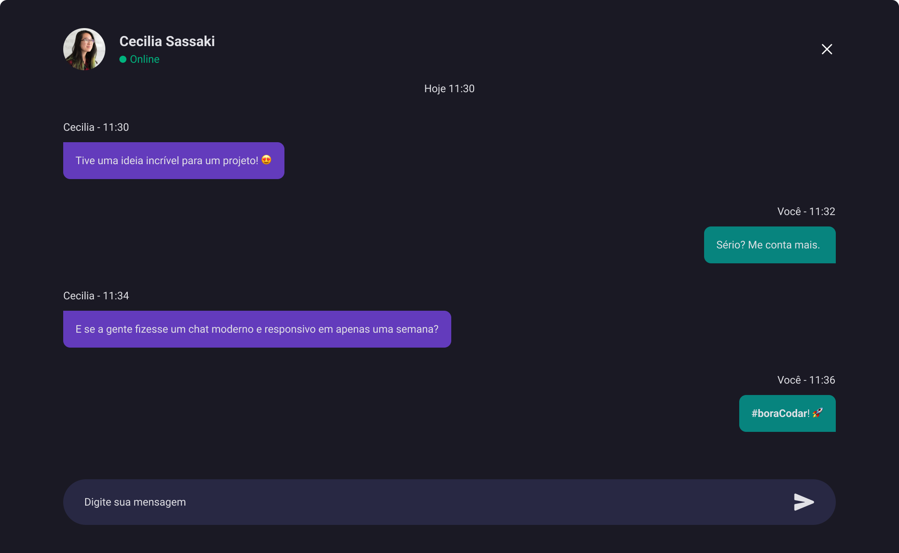
Chat
O Dev links é um agregador de links onde é possível colocar links que redirecionam para qualquer rede social desejada ou qualquer site da internet.

Calculadora
O Dev links é um agregador de links onde é possível colocar links que redirecionam para qualquer rede social desejada ou qualquer site da internet.
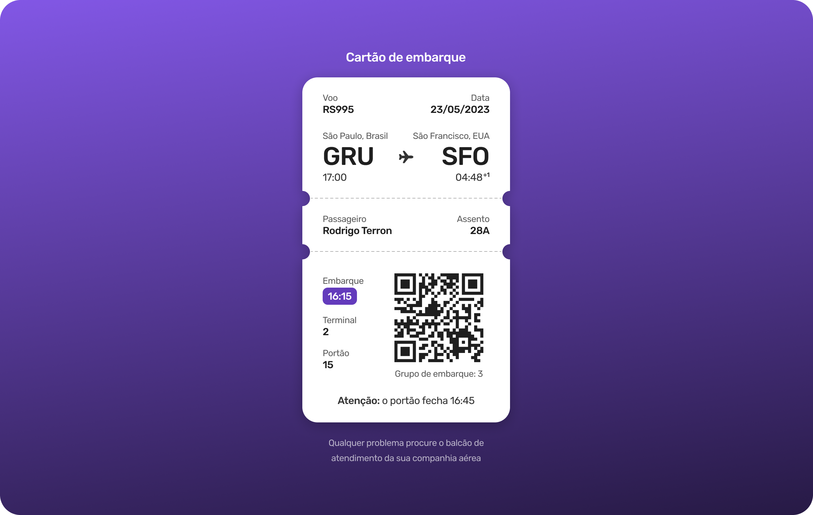
Cartão de Embarque
O Dev links é um agregador de links onde é possível colocar links que redirecionam para qualquer rede social desejada ou qualquer site da internet.
Site de Busca
O Dev links é um agregador de links onde é possível colocar links que redirecionam para qualquer rede social desejada ou qualquer site da internet.
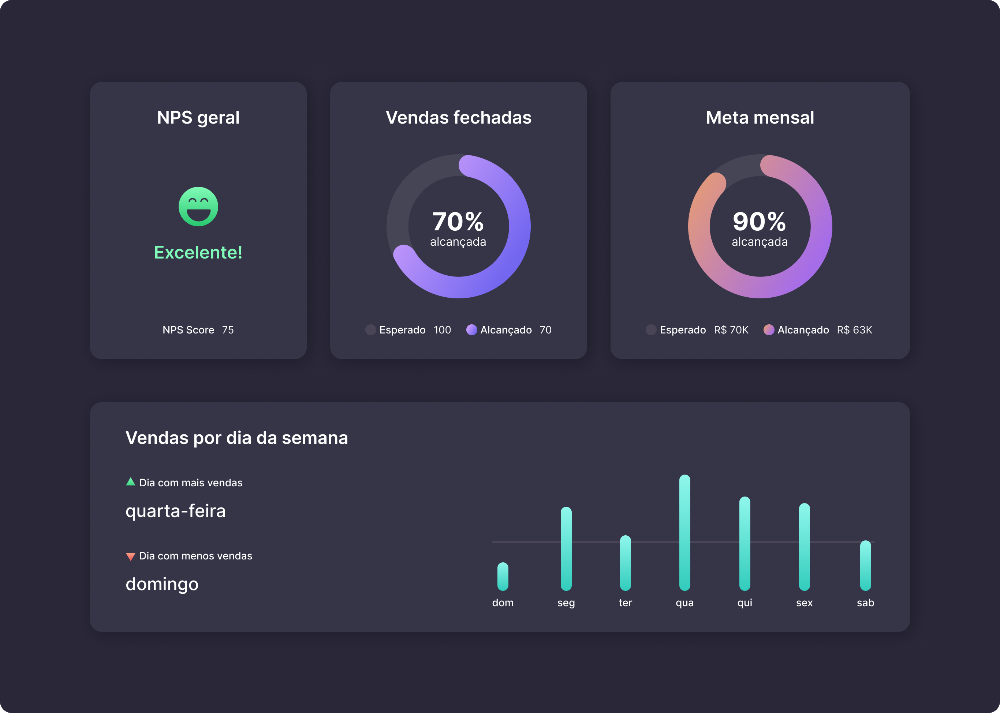
Dashboard
O Dev links é um agregador de links onde é possível colocar links que redirecionam para qualquer rede social desejada ou qualquer site da internet.
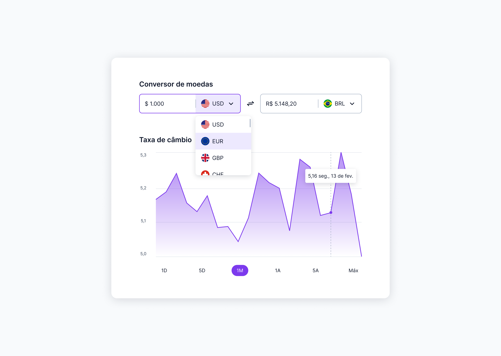
Conversor
O Dev links é um agregador de links onde é possível colocar links que redirecionam para qualquer rede social desejada ou qualquer site da internet.
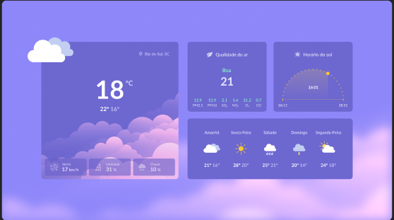
Página de Clima
O Dev links é um agregador de links onde é possível colocar links que redirecionam para qualquer rede social desejada ou qualquer site da internet.
Tela de Login
O Dev links é um agregador de links onde é possível colocar links que redirecionam para qualquer rede social desejada ou qualquer site da internet.
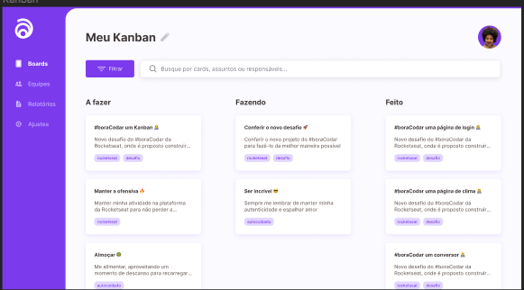
Kaban
O Dev links é um agregador de links onde é possível colocar links que redirecionam para qualquer rede social desejada ou qualquer site da internet.
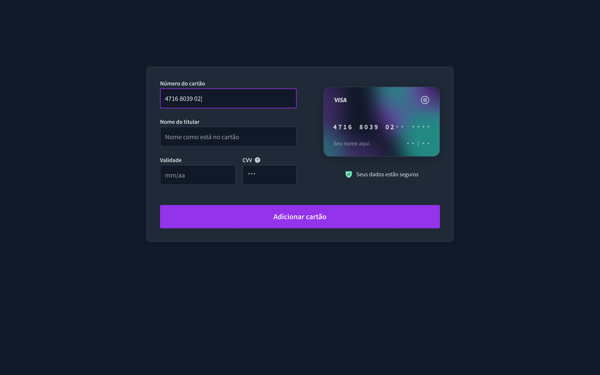
Formulário de Cartão
O Dev links é um agregador de links onde é possível colocar links que redirecionam para qualquer rede social desejada ou qualquer site da internet.
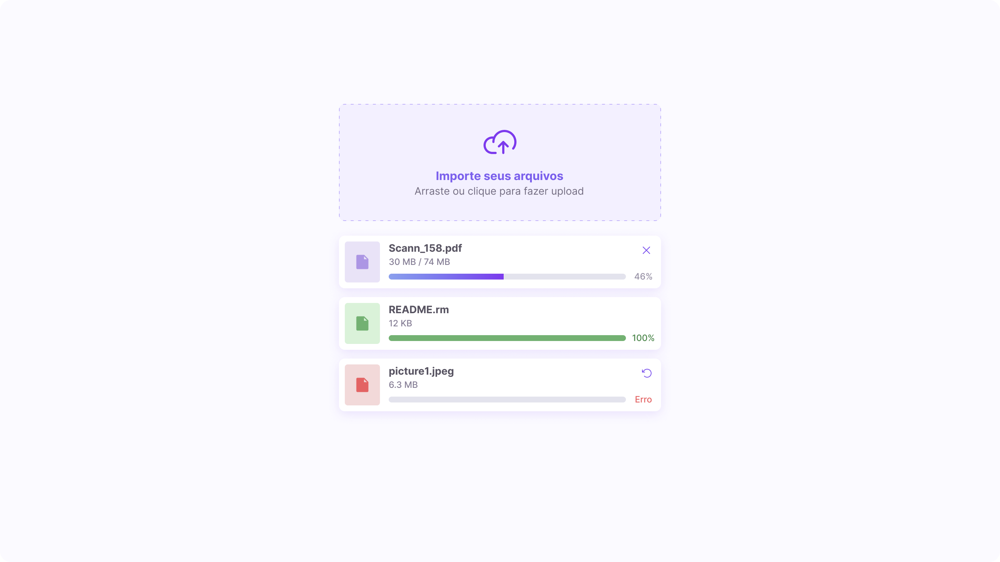
Componente de Upload
O Dev links é um agregador de links onde é possível colocar links que redirecionam para qualquer rede social desejada ou qualquer site da internet.
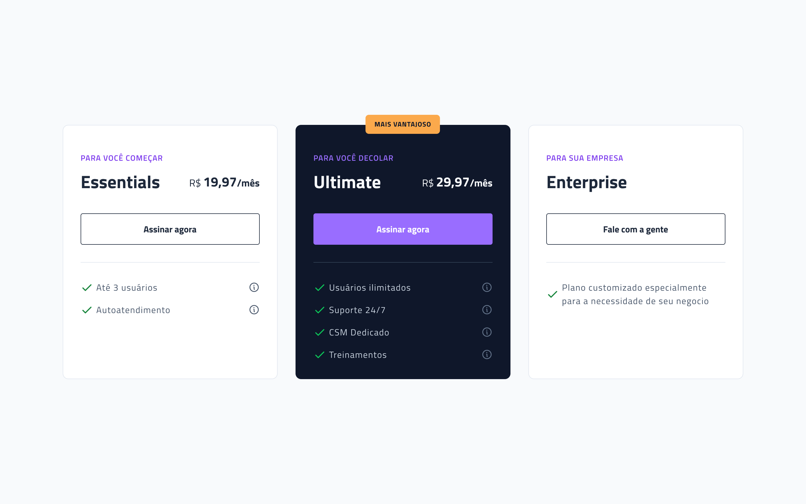